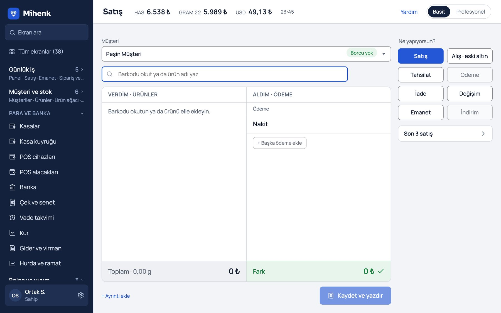
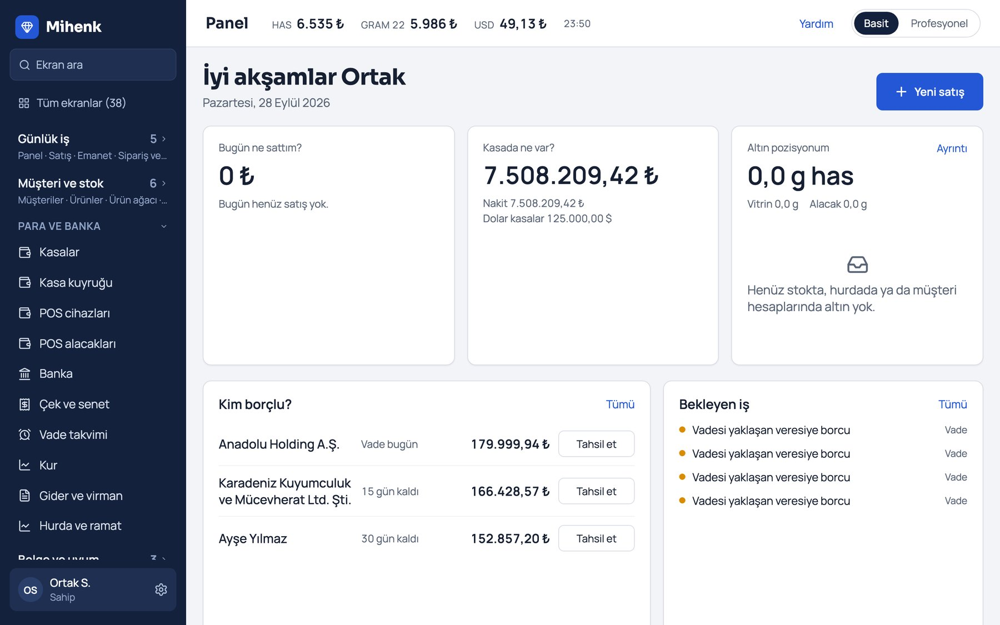
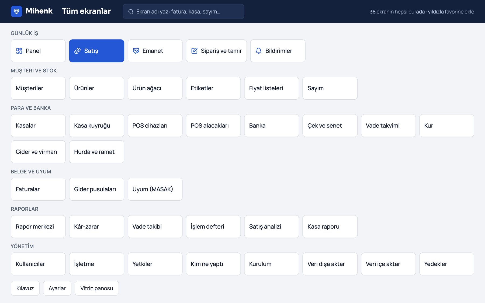
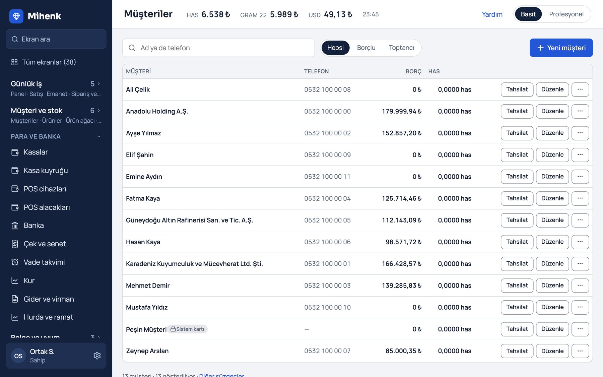
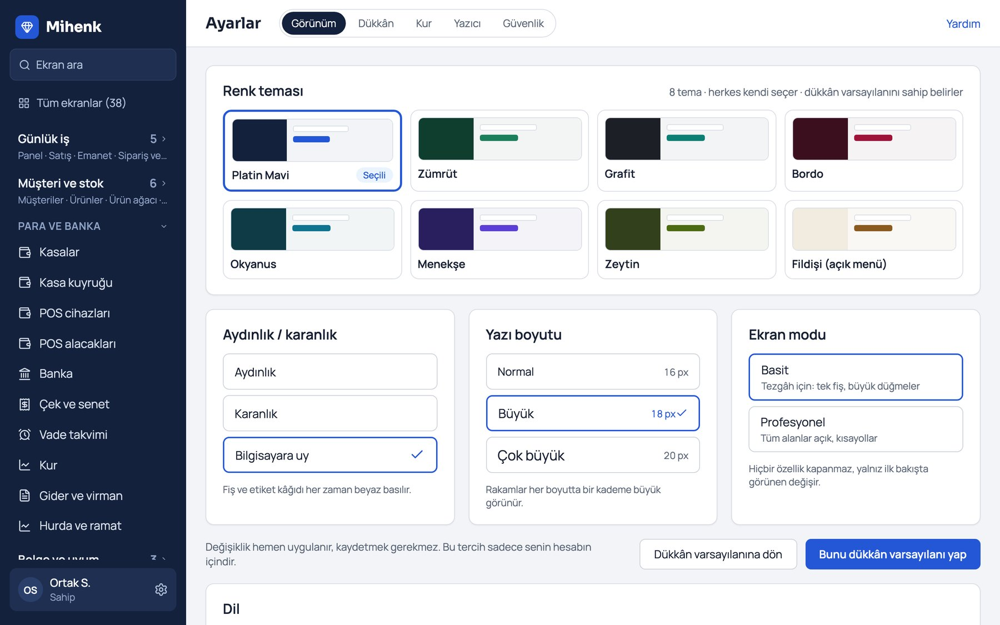
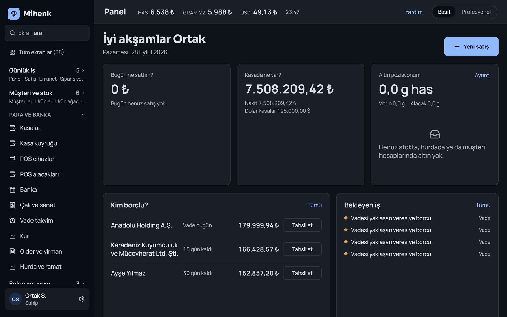
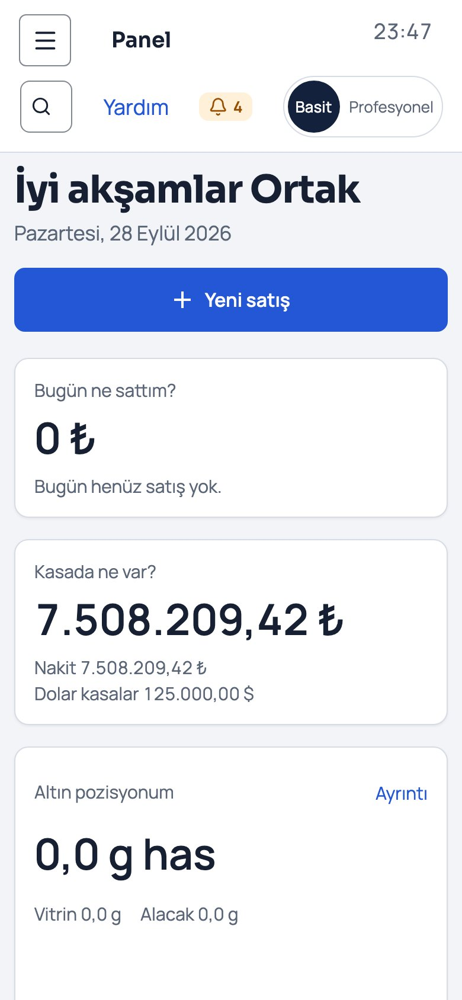
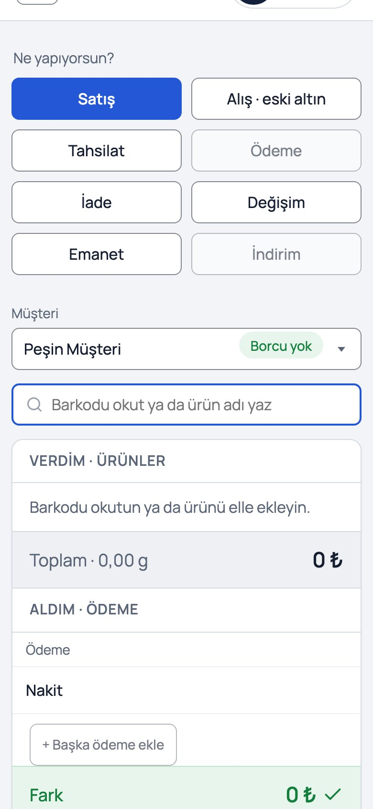

Satış, alış, tahsilat aynı ekranda. Has hesabı, kasa ve devletin kuralları arkada kendiliğinden işler. Tezgâhtar öğrenmek zorunda değil; program bilir.

Kuyumcunun kafasındaki model tek: "ne verdim, ne aldım." Mihenk o fişi ekrana birebir çizer; geri kalan her şeyi, kanun dâhil, arkada halleder.
Sol tarafa ürün, sağ tarafa nakit, kart, eski altın. Fark sıfır olunca kaydet ve yazdır. Sekme yok, form yığını yok.
Ekran barkod kutusuna odaklı açılır. Okut, fiyat ve has karşılığı ürün kartından gelir; tezgâhtar hesap yapmaz.
Her işlem TL'de ve has gramda ayrı ayrı tutulur. Altın yükselirken TL'de kâr yazıp gramda zarar etmek görünür hale gelir.
Yanlış fiş silinmez, geri alma fişiyle düzeltilir. Kim ne yaptı izi sekiz yıl saklanır; denetimde savunulabilir tek yapı budur.
Basit modda menüde 7 satır, "Tüm ekranlar" sayfasında 38'i birden. Sadeleştirmek özellik kaybetmek değil, katlamaktır.
Her dükkânın verisi ayrı; iki aşamalı giriş; her gece yedek. Kullanıcı başına, modül başına ücret yok.

Dükkânı açınca patronun sorduğu beş sorunun cevabı kaydırmadan görünür. Rapor değil, rakam.
Sol menüde altı grup, kapalı başlar; altında hangi ekranların olduğu yazar. "Tüm ekranlar" sayfası 38 ekranı tek sayfada, büyük karolarla gösterir. Ekran adını yazın, bulsun.

Eşikler mevzuattan gelir, ekranda görünmez. Sınır aşılınca tek cümlelik uyarı ve tek çıkış yolu; aşılan işlem kaydedilemez. Pusula'da olmayan şey budur: Pusula kuralı bilmez, kuyumcuya bırakır.
e-Fatura ve e-Arşiv: GİB entegratörü sözleşmesiyle açılır; kontör ve mali mühür mükellefe aittir.

Her satırda üç düğme: Tahsilat, Düzenle, diğerleri. Borç TL'de ve has gramda yan yana. Düzenleme sağdaki çekmecede açılır, liste kaybolmaz.
Sekiz renk teması, aydınlık ve karanlık, üç yazı boyutu. Her kullanıcı kendi seçer; dükkânın varsayılanını sahip belirler. Fiş ve etiket kâğıdı her zaman beyaz basılır.


Tarayıcıda çalışır; kurulum yok. Telefonda menü çekmeceye girer, düğmeler büyür, fiş aynı kalır. Bilgisayar, tablet, telefon: tek adres.


| Konu | Alışılmış kuyumcu programı | Mihenk |
|---|---|---|
| Lisans | Tek seferlik lisans + USB kilit + yıllık kur aboneliği + ayrı uyum yazılımı | Tek aylık abonelik; kullanıcı ve modül başına ücret yok |
| Kanun | Kuyumcu bilir, program bilmez | MASAK, nakit sınırı, gider pusulası, KDV 23/e programda |
| Yanlış kayıt | Silinir, iz kalmaz | Geri alma fişiyle düzeltilir, iz sekiz yıl kalır |
| Ekran | Masaüstü, tek bilgisayar, tek renk | Tarayıcı, her cihaz, 8 tema, 3 yazı boyutu |
| Öğrenme | 36 eğitim videosu | Uygulama içi tur; hedef: ilk satış 30 dakikada |
| Kalite | Kanıt yayımlanmaz | 6.800'den fazla otomatik test, her ekran gerçek tarayıcıda ölçülür |
İlk dükkânlarla ücretsiz pilot yapıyoruz: kurulum, eğitim ve destek bizden; siz yalnızca kullanıp söylersiniz. Kısıtları yazılı veririz, sürprizsiz.